Design
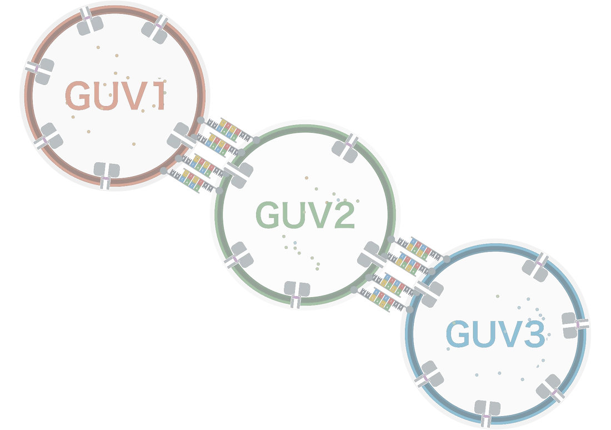
What is the ALiGN
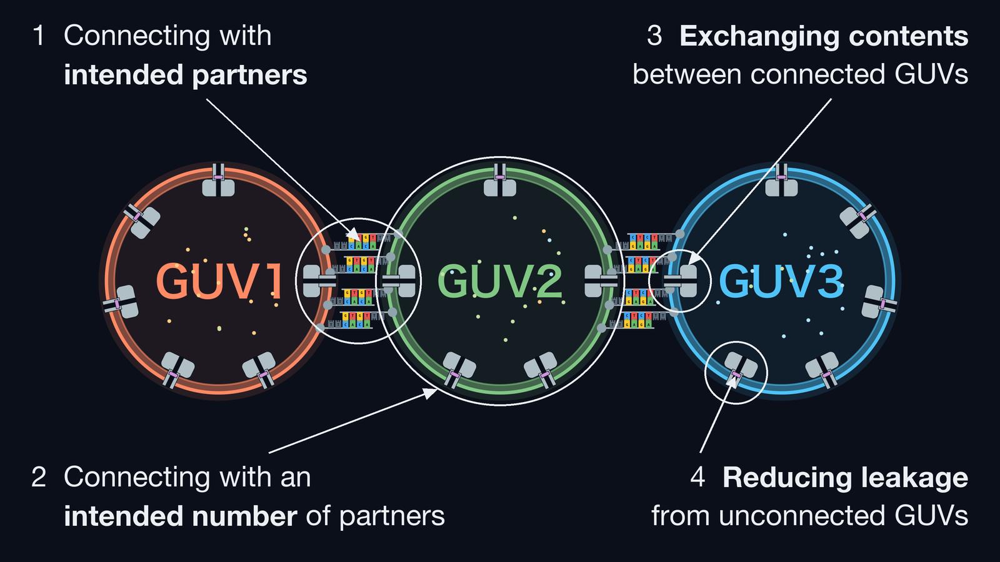
ALiGN is a network of GUVs modeled on cell-to-cell networks. In this project, we aim to realize a network of three GUVs (GUV1, GUV2 and GUV3). To connect three GUVs, we need two different connections, GUV1–GUV2 and GUV2–GUV3. Also, these two connections must not interfere with each other. If we can design these two connections independently, the same idea can be extended to three, four or more connections, and to larger networks of GUVs.
We achieve the four elements required for a network modeled on cell-to-cell networks as follows.
Connection (see Specific Connection Between GUVs)
1. Connecting with intended partners: sequence-specific binding
2. Connecting with an intended number of partners: many weak bonds and surface density of DNA
Material exchange (see Pore Formation for Material Exchange)
3. Exchanging contents between connected GUVs: α-hemolysin as a pore
4. Reducing leakage from unconnected GUVs: TRIMEB as a lid
Specific Connection Between GUVs
In ALiGN, we control the connections between GUVs in two ways: connecting with intended partners (sequence-specific binding) and connecting with an intended number of partners (many weak bonds and surface density of DNA).
Sequence-Specific Binding
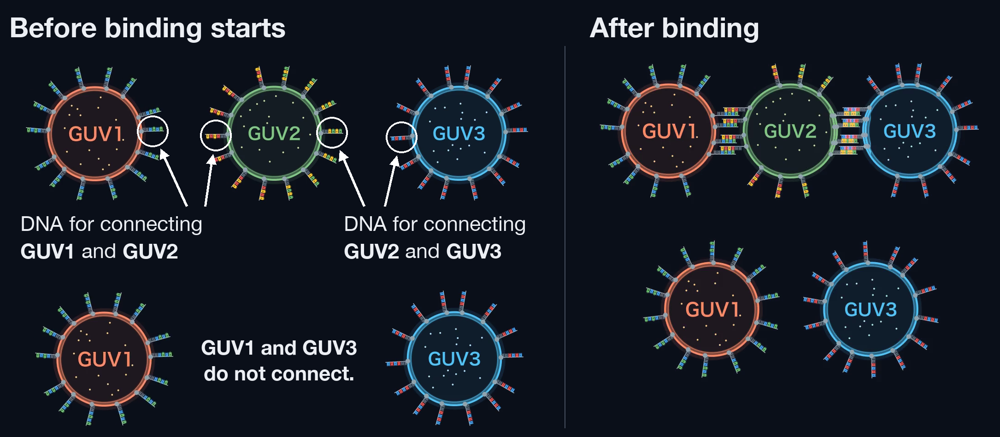
To connect only with intended partners, we place single-stranded DNA on the surface of each GUV and use the complementarity of DNA. A GUV can bind only to a GUV that has the complementary strand.
We prepare two pairs of DNA with different sequences: one for the GUV1–GUV2 connection and one for the GUV2–GUV3 connection. Only GUV2 has two kinds of DNA on its surface: DNA for connecting to GUV1 and DNA for connecting to GUV3. Because the sequences are different, each pair recognizes only its own partner. The two connections do not interfere with each other. As a result, GUV1 connects to GUV2 and GUV2 connects to GUV3, but GUV1 does not connect to GUV3.
Many Weak Bonds and Surface Density of DNA
Many Weak Bonds
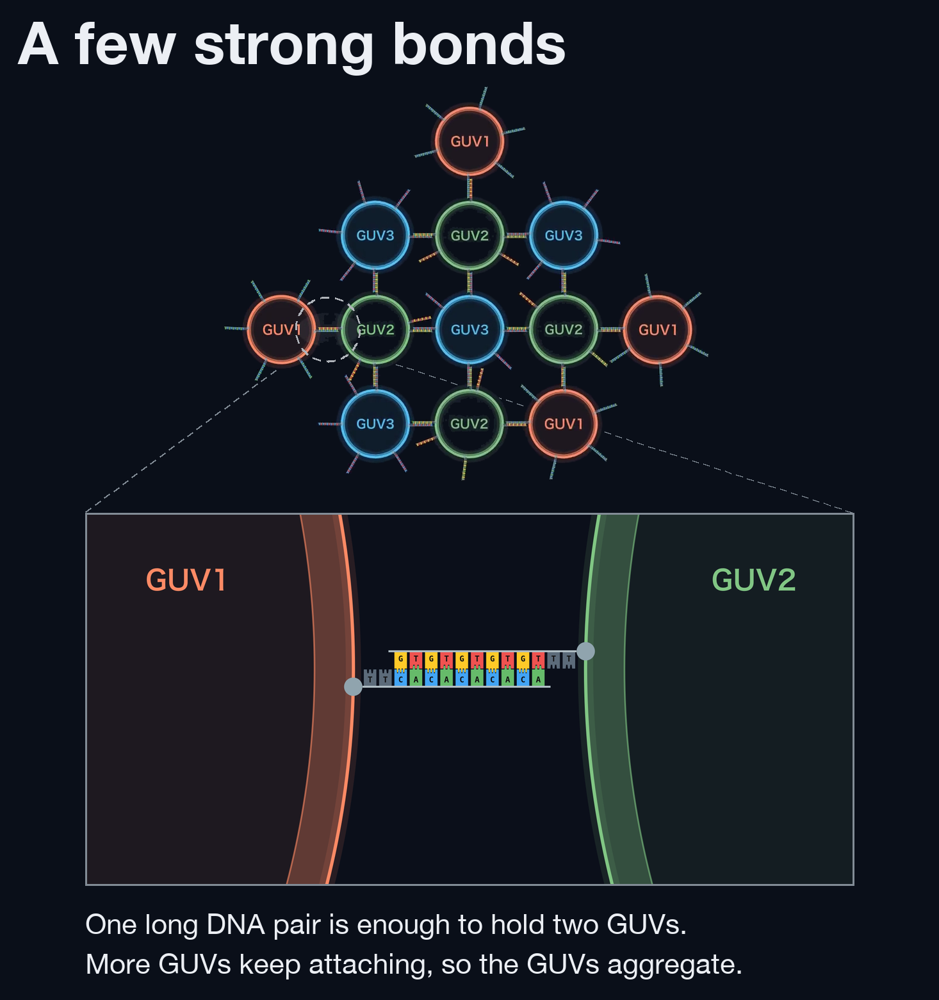
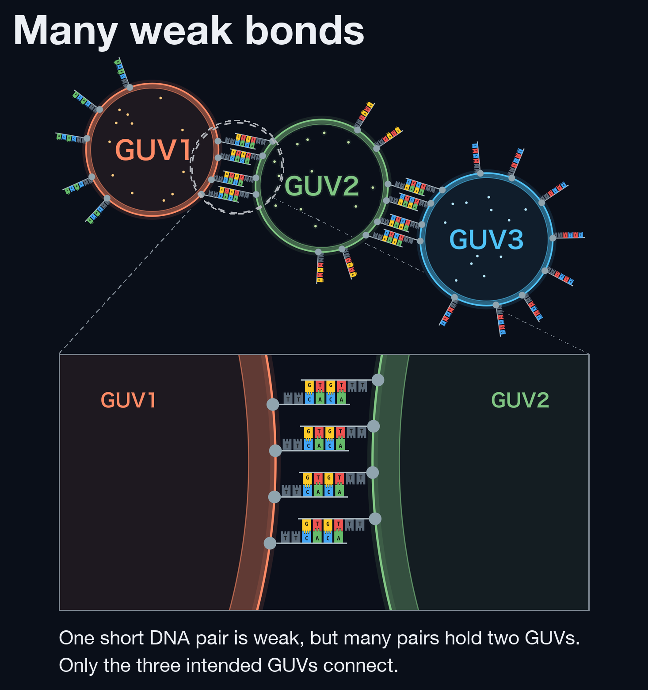
Connecting with intended partners is not enough to control the number of connections. Even if the DNA is specific, a GUV may connect to many partners of the same type at the same time, and GUVs may form large aggregates. In the study by Hadorn et al., GUVs with complementary DNA formed assemblies that were visible to the naked eye [1]. If a small number of DNA strands is enough to keep a connection, GUVs keep aggregating.
Therefore, we use very short DNA strands that are 6 nt long and design each duplex to be very weak. Only 4 of the 6 nucleotides actually pair, so two strands make a 4-bp duplex. The remaining two nucleotides (TT) work as a spacer next to the membrane. Using sticky ends as short as four nucleotides has been proposed as a way to avoid aggregation for micrometer-sized particles coated with DNA [2]. One duplex cannot hold two GUVs together. A connection is kept only when many strands bind at the same time.
Surface Density of DNA
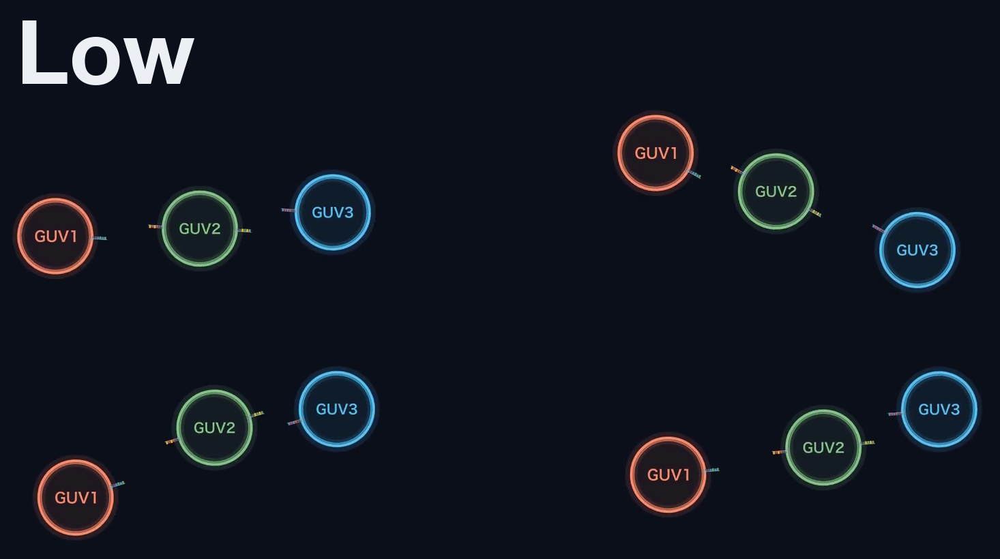
When there is too little DNA on the surface, the GUVs do not connect.
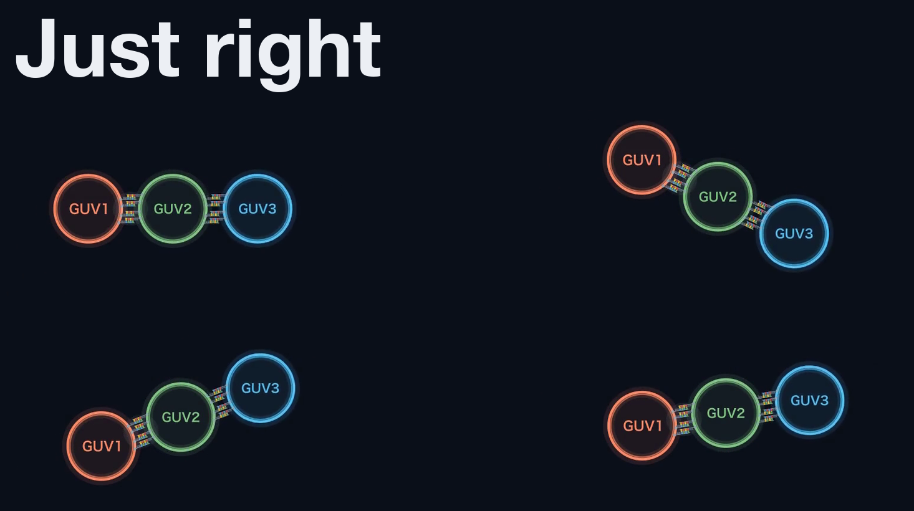
When there is just the right amount of DNA on the surface, the GUVs connect only in sets of three.
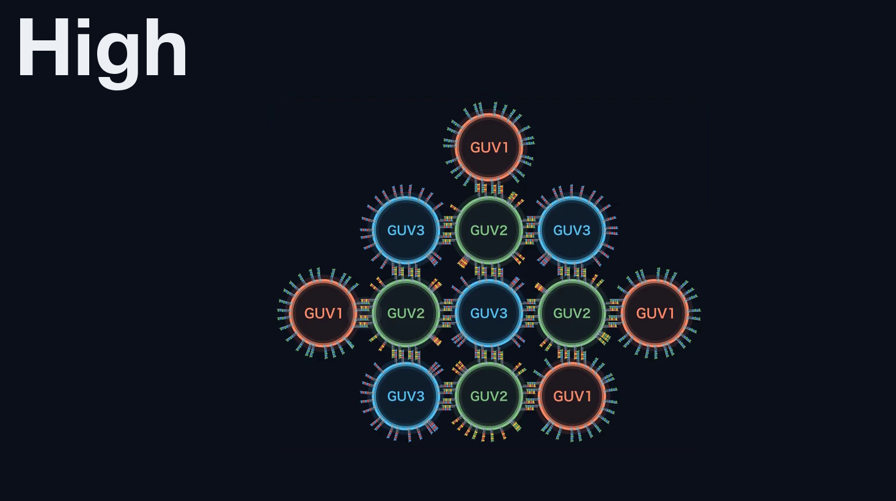
When there is too much DNA on the surface, the GUVs aggregate.
When a GUV connects to its intended partner, most of the strands on the facing surfaces are used for that connection. The few remaining strands cannot hold another partner, so the GUV does not connect any further. Therefore, the key parameter is the surface density of DNA (strands per unit area) on each GUV. GUV1 and GUV3 each have one kind of DNA for connecting to GUV2. Only the central GUV2 has two kinds of DNA: one for connecting to GUV1 and one for connecting to GUV3. By adjusting the surface densities of these four kinds of DNA, we aim to obtain many sets of exactly three GUVs connected as GUV1–GUV2–GUV3.
Pore Formation for Material Exchange
Controlling the connections between GUVs alone does not satisfy the four elements that ALiGN needs. Connected GUVs must also be able to exchange contents with each other, like cells that communicate with each other. To do this, we must meet two conditions at the same time: connected GUVs can exchange their contents, and unconnected GUVs do not leak their contents to the outside. We realize the exchange of contents between connected GUVs with α-hemolysin, and the reduction of leakage from unconnected GUVs with TRIMEB.
α-Hemolysin as a Pore
α-Hemolysin is a pore-forming protein from Staphylococcus aureus. Seven subunits gather in a lipid membrane and form a pore. The pore is 1.4 nm wide at its narrowest point, and small molecules can pass through it [3]. When α-hemolysin is added to the outside of GUVs, pores form in the membrane, and the encapsulated contents leak out [4]. The leaked contents can then move into the inside of the connected partner GUV through the α-hemolysin pores on its surface.
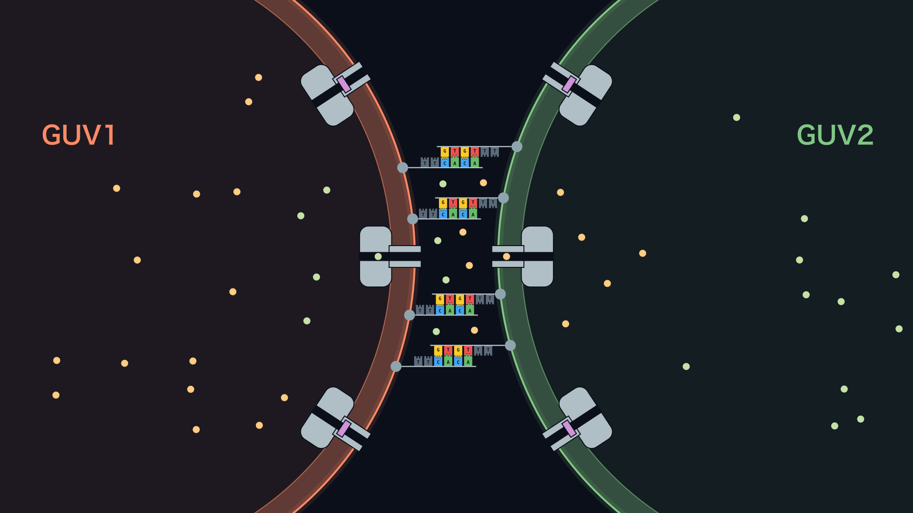
TRIMEB as a Lid
If the pores are only open, the contents leak out through the surface of a GUV even when the GUV is not connected to any partner. To reduce this leakage, we use TRIMEB (heptakis(2,3,6-tri-O-methyl)-β-cyclodextrin), a derivative of β-cyclodextrin. TRIMEB binds reversibly inside the α-hemolysin pore and blocks it like a lid [3]. The more TRIMEB there is, the more slowly the contents leak through the pore [3].
While a GUV is floating alone, TRIMEB in the surrounding solution blocks the pores and reduces the leakage of its contents. When two GUVs are connected, TRIMEB has difficulty entering the narrow gap between their membranes [5]. The pores that face the gap are therefore less likely to be blocked, and the contents can pass from one GUV to the other through two pores in a row [5]. In this way, material exchange happens between GUVs.
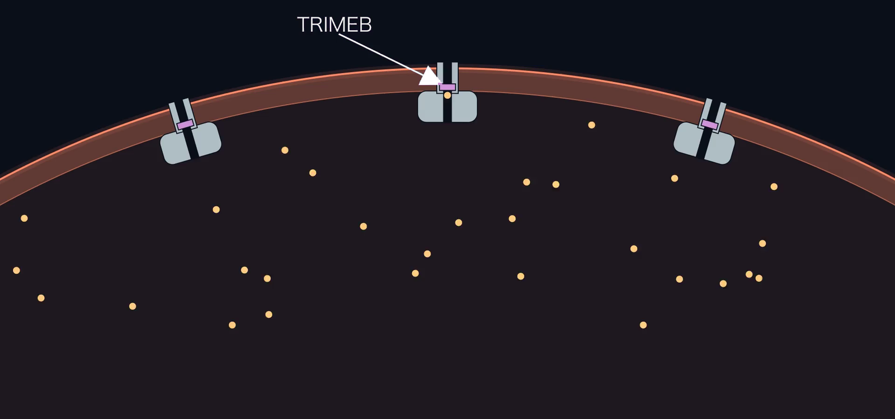
DNA Sequence Design
These are the DNA strands used in ALiGN. Each strand on a GUV has a thiol (SH) modification, and the thiol fixes the strand to the GUV membrane.
6-nt DNA (Main Design)
These are weakly binding strands for connecting GUVs with an intended number of partners (see Many Weak Bonds and Surface Density of DNA). Each strand is 6 nt long, with a 4-nt binding part (ACAC / GTGT or AGAG / CTCT) and a 2-nt TT spacer on the membrane side. In this wiki, “nt” is the length of one strand, and “bp” is the length of a duplex. All strands have SH at the 3′ end.
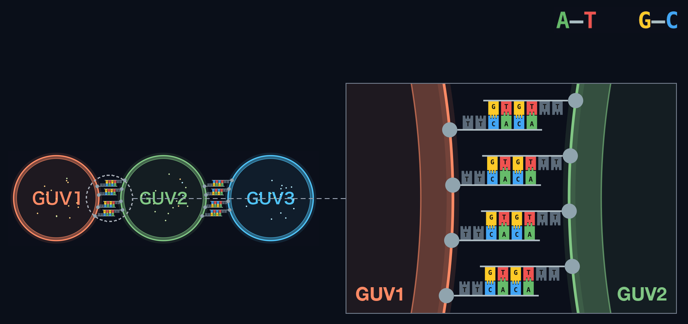
Pair 1 (GUV1 – GUV2)
Conn6_L1: 5′-ACACTT-3′ (SH)
Conn6_R1: 5′-GTGTTT-3′ (SH)
Pair 2 (GUV2 – GUV3)
Conn6_L2: 5′-AGAGTT-3′ (SH)
Conn6_R2: 5′-CTCTTT-3′ (SH)
To check the stability of the duplexes, we calculated the free energy of hybridization ΔG for each pair with the Two State Melting Hybridization mode of the DINAMelt server [7] (DNA, 25 °C, 150 mM Na+, no Mg2+). ΔG was −3.2 kcal/mol for Pair 1 and −2.4 kcal/mol for Pair 2 (−2.6 and −2.0 kcal/mol when only the four binding nucleotides are entered). For comparison, the 23-nt strands used for the strong bonds gave −29.8 and −29.5 kcal/mol under the same conditions.
23-bp DNA (Supporting Design)
These are strongly binding strands that form a stable 23-bp duplex. We use them first to show that DNA can control the GUV1–GUV2 connection and the GUV2–GUV3 connection separately (see Sequence-Specific Binding). SH is at the 3′ end on the L side and at the 5′ end on the R side.
The 23-nt sequences are taken from a published set of orthonormal 23-mers [6]. Every sequence in this set binds only to its own complementary strand and not to the other sequences in the set. Therefore, the GUV1–GUV2 pair and the GUV2–GUV3 pair do not interfere with each other.
We make these strands long because a 23-bp duplex is strong and hardly comes apart, so a few duplexes are enough to hold two GUVs together. If the binding is this strong, a GUV keeps taking new partners, so the number of partners is not controlled. When we use the 23-bp DNA, we do not aim to control the number of partners. We use it only to show that sequences can control the choice of partners, that is, the GUV1–GUV2 and GUV2–GUV3 connections.
How the two strands are joined is also important. A duplex is about 0.34 nm per base pair, so a 23-bp duplex standing between two membranes keeps the membranes about 8 nm apart. This makes the exchange of contents through α-hemolysin difficult. Therefore, we fix one strand at its 3′ end and the other at its 5′ end. The two strands pair side by side from the point where the membranes touch. The duplex then extends outward along the membranes, and does not stand between them. In this way, the two membranes can come close to each other.
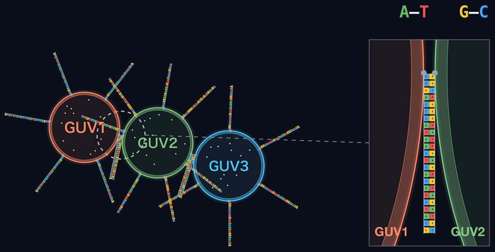
Pair 1 (GUV1 – GUV2)
Conn23_L1: 5′-GCATCTACACTCAATACCCAGCC-3′ (SH)
Conn23_R1: (SH) 5′-GGCTGGGTATTGAGTGTAGATGC-3′
Pair 2 (GUV2 – GUV3)
Conn23_L2: 5′-CTAGTCCATTGTAACGAAGGCCA-3′ (SH)
Conn23_R2: (SH) 5′-TGGCCTTCGTTACAATGGACTAG-3′
63-nt Scaffold DNA (Backup Plan)
The 63-nt scaffold DNA is a backup plan for the case where the weak 6-nt binding alone rarely starts a connection. The 23-nt end of the 63-nt scaffold DNA binds to the 23-nt anchor strand on one GUV. The remaining 40 nt is a repeat sequence (CA or CT, ten 4-nt units). It gathers many 6-nt strands of the partner GUV at one spot and creates a trigger for the connection.
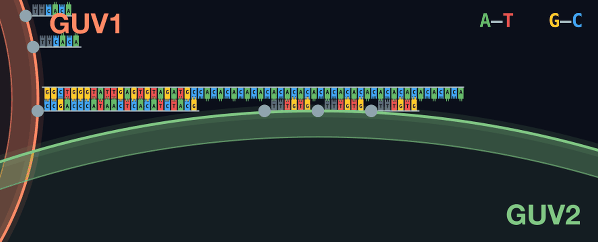
Conn6_L1X: 5′-GGCTGGGTATTGAGTGTAGATGCCACACACACACACACACACACACACACACACACACACACA-3′
(binds Conn23_L1 on GUV1; the CA repeat gathers Conn6_R1 on GUV2)
Conn6_R2X: 5′-CTCTCTCTCTCTCTCTCTCTCTCTCTCTCTCTCTCTCTCTCTAGTCCATTGTAACGAAGGCCA-3′
(binds Conn23_R2 on GUV3; the CT repeat gathers Conn6_L2 on GUV2)
References for the Design
[1] Hadorn, M., Boenzli, E., Sørensen, K. T., De Lucrezia, D., Hanczyc, M. M. & Yomo, T. Defined DNA-mediated assemblies of gene-expressing giant unilamellar vesicles. Langmuir 29, 15309–15319 (2013). https://doi.org/10.1021/la402621r ↩ Back to the text
[2] Wang, Y., Wang, Y., Zheng, X., Ducrot, É., Yodh, J. S., Weck, M. & Pine, D. J. Crystallization of DNA-coated colloids. Nat. Commun. 6, 7253 (2015). https://doi.org/10.1038/ncomms8253 ↩ Back to the text
[3] Thomas, J. M., Friddin, M. S., Ces, O. & Elani, Y. Programming membrane permeability using integrated membrane pores and blockers as molecular regulators. Chem. Commun. 53, 12282–12285 (2017). https://doi.org/10.1039/C7CC05423H ↩ Back to the text
[4] Harjung, A., Fracassi, A. & Devaraj, N. K. Encoding extracellular modification of artificial cell membranes using engineered self-translocating proteins. Nat. Commun. 15, 9363 (2024). https://doi.org/10.1038/s41467-024-53783-4 ↩ Back to the text
[5] Bolognesi, G., Friddin, M. S., Salehi-Reyhani, A., Barlow, N. E., Brooks, N. J., Ces, O. & Elani, Y. Sculpting and fusing biomimetic vesicle networks using optical tweezers. Nat. Commun. 9, 1882 (2018). https://doi.org/10.1038/s41467-018-04282-w ↩ Back to the text
[6] Kitajima, T., Takinoue, M., Shohda, K. & Suyama, A. Design of code words for DNA computers and nanostructures with consideration of hybridization kinetics. In: Garzon, M. H. & Yan, H. (eds.) DNA Computing (DNA 13), Lecture Notes in Computer Science 4848, 119–129, Springer (2008). https://doi.org/10.1007/978-3-540-77962-9_12 ↩ Back to the text
[7] Markham, N. R. & Zuker, M. DINAMelt web server for nucleic acid melting prediction. Nucleic Acids Res. 33, W577–W581 (2005). https://doi.org/10.1093/nar/gki591 (server: https://www.unafold.org/) ↩ Back to the text